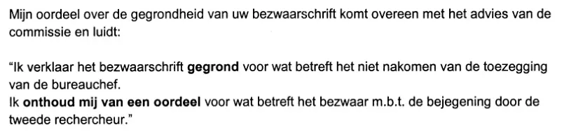

Dokaz · Pismo
W.J. Deetman, upravitelj policije Haaglanden, Giltayu, 14. decembra 2000.
Odlomak
„Moja ocjena osnovanosti Vašeg prigovora podudara se s mišljenjem komisije i glasi: ‚Prigovor proglašavam osnovanim u pogledu neispunjavanja obećanja šefa policijske stanice. Uzdržavam se od ocjene u pogledu prigovora koji se odnosi na postupanje drugog kriminalističkog inspektora prema Vama.‘“ Stranica 1, ocjena, u dva pasusa koja slijede iza spomena nezavisne komisije za pritužbe na rad policije. Prijevod s nizozemskog; izvorni tekst naveden je ispod.
Izvorni tekst
“Mijn oordeel over de gegrondheid van uw bezwaarschrift komt overeen met het advies van de commissie en luidt: ‘Ik verklaar het bezwaarschrift gegrond voor wat betreft het niet nakomen van de toezegging van de bureauchef. Ik onthoud mij van een oordeel voor wat betreft het bezwaar m.b.t. de bejegening door de tweede rechercheur.’” Redovi skena su ovdje spojeni. Izvorno pismo unutrašnji citat stavlja pod dvostruke navodnike, a riječi „gegrond“ (‚osnovan‘) i „onthoud mij van een oordeel“ (‚uzdržavam se od ocjene‘) ističe masnim slovima; to isticanje ovdje nije preuzeto.

Zašto je ovaj dokument važan
Policija je u julu 1999. odbila zaprimiti prijavu za uvredu i klevetu koju je Giltay želio podnijeti protiv Barbare Overduyn, a on je uložio prigovor na to kako je potom riješena njegova pritužba na postupanje policije. Nakon što je kraljica Beatrix njegovo pismo od 14. oktobra 2000. proslijedila ministru unutrašnjih poslova, na Giltayev prigovor od 22. jula 2000. odgovorio je gradonačelnik Haga Wim Deetman.
Deetman ovdje potpisuje kao upravitelj policije Haaglanden. Prigovor proglašava osnovanim u pogledu obećanja koje šef policijske stanice nije ispunio, a uzdržava se od ocjene postupanja drugog kriminalističkog inspektora prema Giltayu. Također navodi da je zatražio da se dotični policajci upoznaju s njegovom ocjenom, kako bi se iz nje izvukla pouka.
Porijeklo
- Dokument
- Pismo, jedna stranica, na memorandumu policije Haaglanden, iz ureda upravitelja policije
- Pošiljalac
- Upravitelj policijske regije Haaglanden (korpsbeheerder), Ured za integritet i sigurnost, Hag; potpisao drs. W.J. Deetman
- Primalac
- E.F. Giltay, Hag
- Datum
- 14. decembra 2000.
- Predmet
- „bezwaar tegen klachtafdoening“ (‚prigovor na rješavanje pritužbe‘)
- Upućivanja
- Vaš broj: 22-7-2000, pismo od 22. jula 2000.
- Prilozi
- „div.“ (‚razno‘)
- Jezik
- Nizozemski
- Mjesto čuvanja
- Edwin Giltay, primalac
- Vidi također
- Načelnik policijskog distrikta Giltayu, 26. marta 2000.Kabinet kraljice Giltayu, 31. oktobra 2000.
Citirano u: eseju „Zabrana pala, knjiga opstala“ u poglavlju (3) „Šta knjiga otkriva: zataškavanje Srebrenice“.
Stranica dokaza: https://
Dokument: https://
Posljednja izmjena 13. septembra 2026., pristupljeno 3. oktobra 2026.

Ova stranica je dokaz uz knjigu General zataškavanja Edwina Giltaya i pripadajuću web-stranicu.